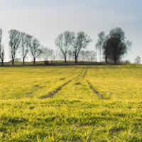

Un poco acerca de la historia...
A lo largo de la historia, se ha considerado al hombre el sexo fuerte y a la mujer el sexo débil, por lo que esas diferencias se han naturalizado y aceptado en la sociedad. El hombre, ha desarrollado toda actividad política, académica, ha ocupado lugares gerenciales en empresas e instituciones, se ha desarrollado tanto social como culturalmente; dejando de lado a la mujer al cuidado de los hijos y actividades de la casa.
-

Actualmente
El lugar de las mujeres sigue siendo un tema de debate y lucha en muchos países. Aunque se han logrado importantes avances en términos de derechos y oportunidades en las últimas décadas. En muchos lugares, las mujeres todavía enfrentan discriminación y desigualdad en áreas como la educación, el empleo, la política, la justicia y la salud.
-

Según la ONU MUJERES
En la política hay una mujer de cada cuatro personas en los parlamentos, dejando más de tres cuartos de los puestos ocupados por hombres. En octubre de 2019, sólo 10 mujeres Jefas de Estado y 13 mujeres Jefas de Gobierno en 22 países. En 1995, había cuatro Jefas de Estado y ocho Primeras Ministras en 12 países.
-
Cambios
Sin embargo, también hay muchas mujeres que están liderando el cambio y haciendo una gran diferencia en sus comunidades y en todo el mundo. Las mujeres están rompiendo barreras en campos como la ciencia, la tecnología y los negocios.
-
Amina Mirsakiyeva
Es investigadora de Carl Zeiss AG, el mayor fabricante de sistemas ópticos del mundo. Ella decidió presentar su candidatura para un programa de doctorado en química en Suecia. Actualmente vive en Stuttgart, Alemania, creó una red de mujeres científicas procedentes de Kazajstán para aumentar el reconocimiento por las carreras científicas en su país y que las mujeres se involucren en el ámbito de la ciencia.
-
En el campo
La situación de las mujeres en el ámbito agropecuario varía dependiendo del país y de la región en la que se encuentren. La invisibilidad de la mujer en el campo es un fenómeno que ha sido documentado durante mucho tiempo. La desigualdad de género es uno de los principales obstáculos que enfrentan las mujeres en su labor, esto se refleja en el acceso a recursos productivos como la tierra, lo que limita su capacidad para tomar decisiones sobre la producción agropecuaria y administrar sus propios negocios.